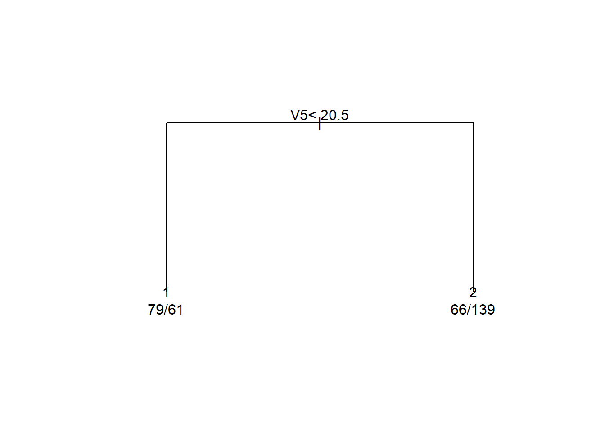
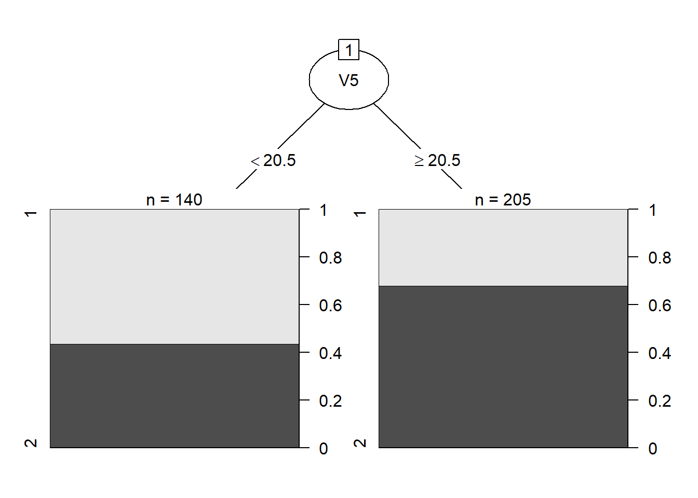
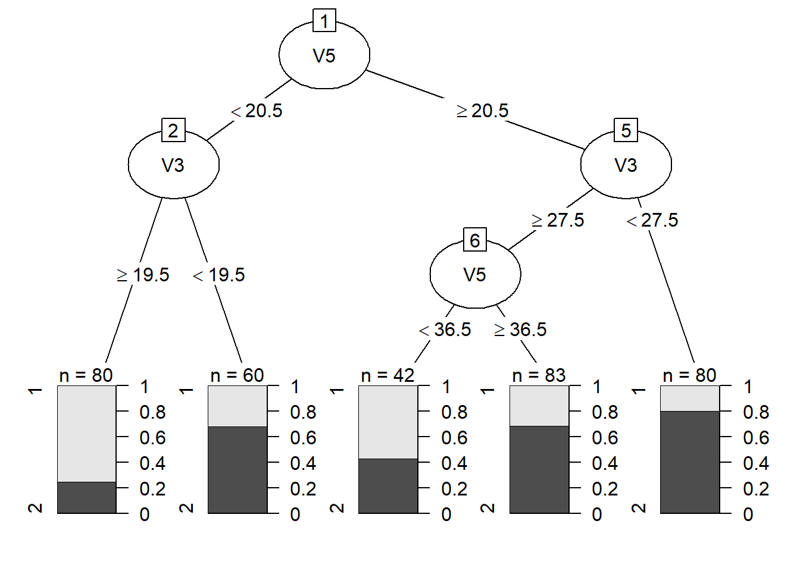
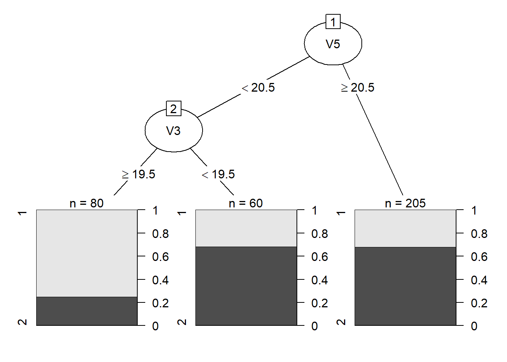
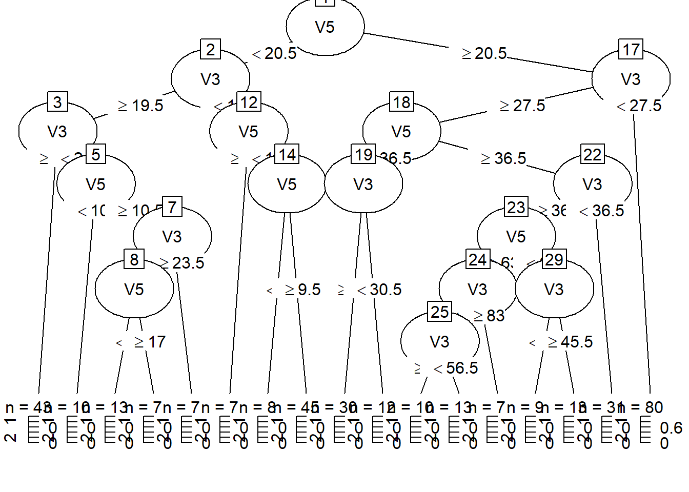
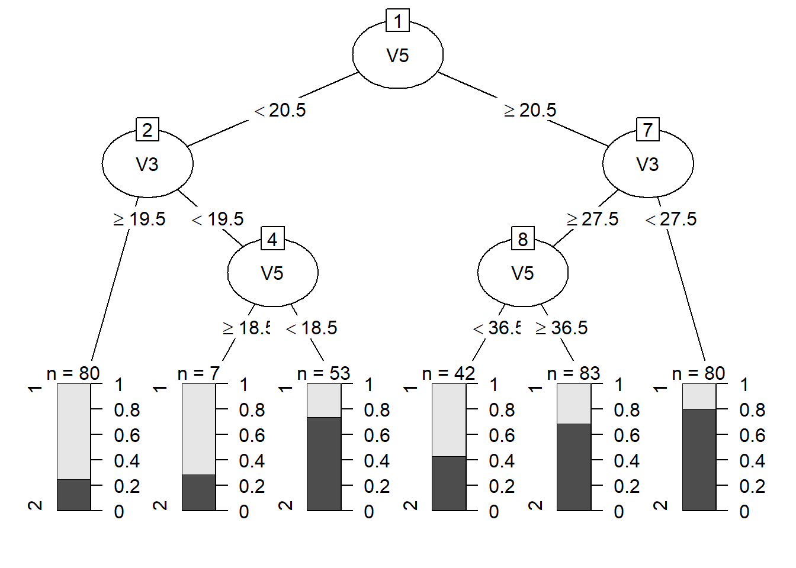
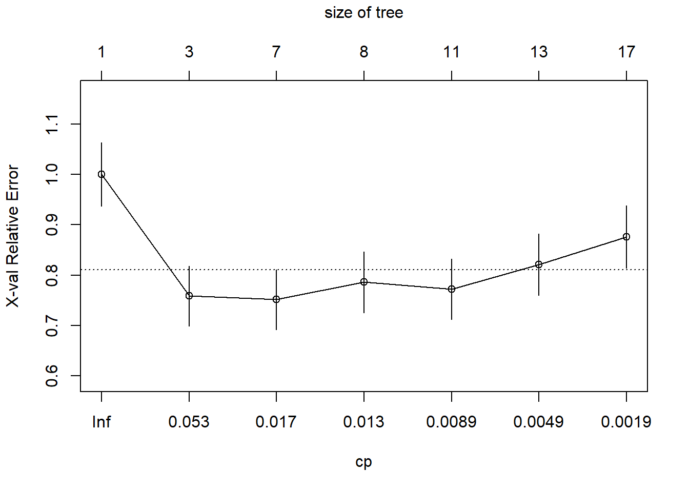
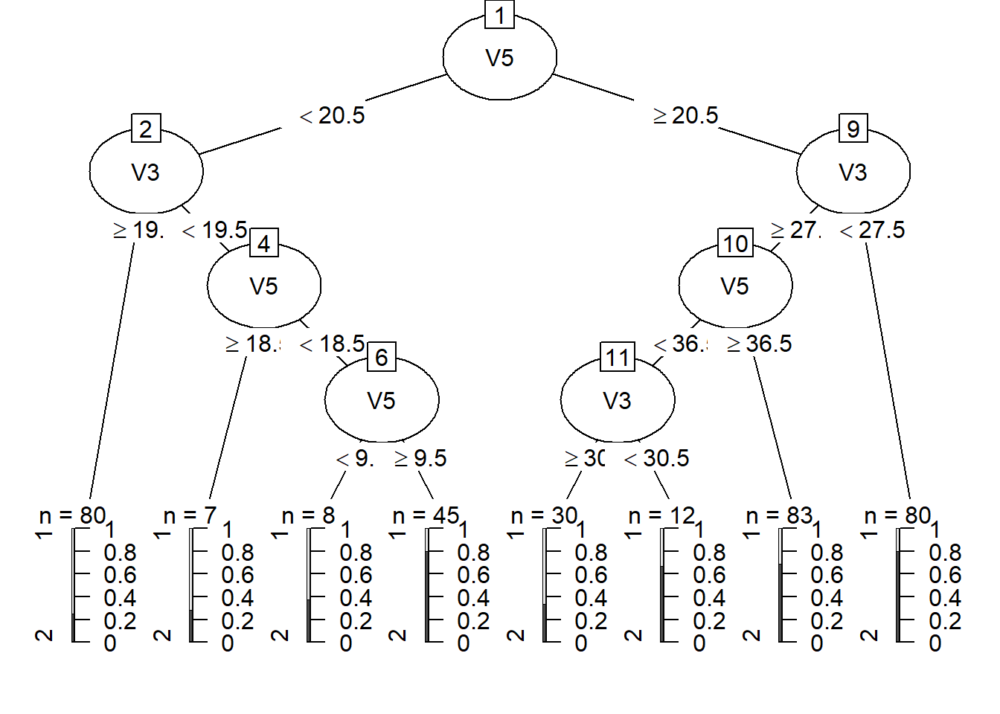

library(rpart)Warning: package 'rpart' was built under R version 4.1.3Sirven para predicción numérica (regresión) y categórica (clasificación).
Es un modelo muy fácil de interpretar, útil para inferencia.
Este modelo tiene alta variabilidad (válido para todo modelo de árboles).
Es tan flexible, que fácilmente produce sobreajustes.
Es un modelo escalable.
Este modelo no genera directamente la probabilidad de pertenencia a una clase, sino la clasificación en sí.
Nodo interno (root node): Denota una prueba sobre un atributo.
Rama (branch): Corresponde a un valor de atributo; representa el resultado de una prueba.
Nodo terminal (leaf node): Representa una etiqueta de clase.
Cada camino es una conjunción de valores de atributos.
Este modelo se puede construir rápidamente.
No requiere que las variables sean independientes.
Permite evaluar qué variables son importantes y cómo interactúan ente ellos.
Es robusto a outliers.
Funciona bien incluso cuando hay variables faltantes en observaciones (datos perdidos).
Las variables se discretizan al momemto de generar el árbol de decisión. Esto se evidencia para predictores numéricos, pues, nodo por nodo, se discretizan en dos categorías/regiones vía un punto de corte.
Construcción del árbol:
Poda del árbol: Identificar y remover ramas que causen ruido o tengan outliers.
El que se divida una región en dos subregiones no depende de si la variable es numérica o categórica, sino del algoritmo de inducción empleado.
Coeficiente de Gini
Entropía
Mayor valor de estas medidas, implica mayor impureza del nodo terminal.
A mayor impureza, sería más difícil saber a que categoría pertenece una observación presente en un nodo terminal.
Coeficiente de Gini asociado a una partición que produce nodos terminales es el promedio ponderado de los coeficientes de Gini de aquellos nodos terminales, donde la ponderación es respecto al número de observaciones en cada nodo terminal.
Nodos con medida de impureza igual a cero no se dividen más, pues no es necesario.
library(rpart)Warning: package 'rpart' was built under R version 4.1.3minsplit:
minbucket:
minsplit / 3cp:
cp (respecto al nivel anterior) entonces, se para.cp = 0.01bupa <- read.table("../datos/bupa.txt", header = TRUE, sep = ",")
head(bupa) V1 V2 V3 V4 V5 V6 V7
1 85 92 45 27 31 0 1
2 85 64 59 32 23 0 2
3 86 54 33 16 54 0 2
4 91 78 34 24 36 0 2
5 87 70 12 28 10 0 2
6 98 55 13 17 17 0 2# Declarar V7 como un factor
bupa[,7] <- as.factor(bupa[,7])minbucket = 50minsplit = 150# Estimar el árbol
arbol1 <- rpart(
V7 ~ V3 + V5, data = bupa, method = "class", minbucket = 50
)
arbol1n= 345
node), split, n, loss, yval, (yprob)
* denotes terminal node
1) root 345 145 2 (0.4202899 0.5797101)
2) V5< 20.5 140 61 1 (0.5642857 0.4357143) *
3) V5>=20.5 205 66 2 (0.3219512 0.6780488) *V5 < 20.5.V5 < 20.5.# Graficando el arbol
plot(arbol1, margin = 0.25)
text(arbol1, use.n = TRUE)
# Mejoramos los gráficos
library(partykit)Warning: package 'partykit' was built under R version 4.1.3Loading required package: gridLoading required package: libcoinWarning: package 'libcoin' was built under R version 4.1.3Loading required package: mvtnormplot(partykit::as.party(arbol1), tp_args = list(id = FALSE))
Fijamos minbucket = 20 (minsplit = 60) para obtener un árbol con más ramas.
arbol2 <- rpart(
V7 ~ V3 + V5, data = bupa, method = "class", minbucket = 20
)
plot(as.party(arbol2), tp_args = list(id = FALSE))
Fijamos cp = 0.05.
arbol3 <- rpart(
V7 ~ V3 + V5, data = bupa, method = "class", cp = 0.05
)
plot(as.party(arbol3), tp_args = list(id = FALSE))
Fijamos cp = 0.001 para obtener un árbol con más ramas.
arbol4 <- rpart(
V7 ~ V3 + V5, data = bupa, method = "class", cp = 0.001
)
plot(as.party(arbol4), tp_args = list(id = FALSE))
Fijamos maxdepth = 3.
arbol5 <- rpart(
V7 ~ V3 + V5, data = bupa, method = "class", maxdepth = 3
)
plot(as.party(arbol5), tp_args = list(id = FALSE))
set.seed(060717)
# A propósito dejamos crecer mucho el árbol, fijando
# un valor vajo de cp .
arbol <- rpart(
V7~ V3 + V5, data = bupa, method = "class", cp = 0.001
)
# Fijar un criterio para podar el árbol
arbol6 <- rpart::prune(arbol, cp = 0.1)
plot(as.party(arbol), tp_args = list(id = FALSE))
plot(as.party(arbol6), tp_args = list(id = FALSE))
# Elección del modelo con métrica menor (error) o mejor (accuracy, por ejemplo)
rpart::printcp(arbol)
Classification tree:
rpart(formula = V7 ~ V3 + V5, data = bupa, method = "class",
cp = 0.001)
Variables actually used in tree construction:
[1] V3 V5
Root node error: 145/345 = 0.42029
n= 345
CP nsplit rel error xerror xstd
1 0.1379310 0 1.00000 1.00000 0.063230
2 0.0206897 2 0.72414 0.75862 0.059697
3 0.0137931 6 0.63448 0.75172 0.059551
4 0.0114943 7 0.62069 0.78621 0.060253
5 0.0068966 10 0.58621 0.77241 0.059980
6 0.0034483 12 0.57241 0.82069 0.060891
7 0.0010000 16 0.55862 0.87586 0.061781La columna rel error (relative error) no nos sirve, pues esos valores siempre están decreciendo, ya que la impureza siempre diminuye para niveles más altos del árbol.
# Elección del modelo vía la regla del error estándar
rpart::plotcp(arbol)
En el eje X están las medias geométricas, de dos en dos, de valores de CP en la tabla mostrada previamente.
arbol7 <- prune(arbol, cp = 0.0137931)
plot(as.party(arbol7), tp_args = list(id = FALSE))
arbol7 <- prune(arbol, cp = 0.053)
plot(as.party(arbol7), tp_args = list(id = FALSE))arbol.completo <- rpart(
V7 ~ ., data = bupa, method = "class", cp = 0, minbucket = 1
)
arbol.completon= 345
node), split, n, loss, yval, (yprob)
* denotes terminal node
1) root 345 145 2 (0.42028986 0.57971014)
2) V5< 20.5 140 61 1 (0.56428571 0.43571429)
4) V3>=19.5 80 20 1 (0.75000000 0.25000000)
8) V4< 21.5 43 5 1 (0.88372093 0.11627907)
16) V6< 3.5 35 2 1 (0.94285714 0.05714286)
32) V1>=85.5 31 0 1 (1.00000000 0.00000000) *
33) V1< 85.5 4 2 1 (0.50000000 0.50000000)
66) V1< 83.5 2 0 1 (1.00000000 0.00000000) *
67) V1>=83.5 2 0 2 (0.00000000 1.00000000) *
17) V6>=3.5 8 3 1 (0.62500000 0.37500000)
34) V3>=23.5 5 0 1 (1.00000000 0.00000000) *
35) V3< 23.5 3 0 2 (0.00000000 1.00000000) *
9) V4>=21.5 37 15 1 (0.59459459 0.40540541)
18) V1>=88.5 22 5 1 (0.77272727 0.22727273)
36) V4>=24.5 14 1 1 (0.92857143 0.07142857) *
37) V4< 24.5 8 4 1 (0.50000000 0.50000000)
74) V6>=5 2 0 1 (1.00000000 0.00000000) *
75) V6< 5 6 2 2 (0.33333333 0.66666667)
150) V2>=63.5 3 1 1 (0.66666667 0.33333333)
300) V2< 74 2 0 1 (1.00000000 0.00000000) *
301) V2>=74 1 0 2 (0.00000000 1.00000000) *
151) V2< 63.5 3 0 2 (0.00000000 1.00000000) *
19) V1< 88.5 15 5 2 (0.33333333 0.66666667)
38) V3>=29.5 3 0 1 (1.00000000 0.00000000) *
39) V3< 29.5 12 2 2 (0.16666667 0.83333333)
78) V2>=81.5 1 0 1 (1.00000000 0.00000000) *
79) V2< 81.5 11 1 2 (0.09090909 0.90909091) *
5) V3< 19.5 60 19 2 (0.31666667 0.68333333)
10) V2>=77 16 5 1 (0.68750000 0.31250000)
20) V1>=88.5 12 2 1 (0.83333333 0.16666667)
40) V2< 125 11 1 1 (0.90909091 0.09090909)
80) V1>=89.5 8 0 1 (1.00000000 0.00000000) *
81) V1< 89.5 3 1 1 (0.66666667 0.33333333)
162) V3< 17.5 2 0 1 (1.00000000 0.00000000) *
163) V3>=17.5 1 0 2 (0.00000000 1.00000000) *
41) V2>=125 1 0 2 (0.00000000 1.00000000) *
21) V1< 88.5 4 1 2 (0.25000000 0.75000000)
42) V1< 85.5 1 0 1 (1.00000000 0.00000000) *
43) V1>=85.5 3 0 2 (0.00000000 1.00000000) *
11) V2< 77 44 8 2 (0.18181818 0.81818182)
22) V4< 14.5 6 2 1 (0.66666667 0.33333333)
44) V1>=91.5 3 0 1 (1.00000000 0.00000000) *
45) V1< 91.5 3 1 2 (0.33333333 0.66666667)
90) V2>=60 1 0 1 (1.00000000 0.00000000) *
91) V2< 60 2 0 2 (0.00000000 1.00000000) *
23) V4>=14.5 38 4 2 (0.10526316 0.89473684)
46) V6< 3.5 23 4 2 (0.17391304 0.82608696)
92) V5>=18.5 1 0 1 (1.00000000 0.00000000) *
93) V5< 18.5 22 3 2 (0.13636364 0.86363636)
186) V6>=2.5 1 0 1 (1.00000000 0.00000000) *
187) V6< 2.5 21 2 2 (0.09523810 0.90476190)
374) V5>=14.5 8 2 2 (0.25000000 0.75000000)
748) V5< 15.5 2 0 1 (1.00000000 0.00000000) *
749) V5>=15.5 6 0 2 (0.00000000 1.00000000) *
375) V5< 14.5 13 0 2 (0.00000000 1.00000000) *
47) V6>=3.5 15 0 2 (0.00000000 1.00000000) *
3) V5>=20.5 205 66 2 (0.32195122 0.67804878)
6) V6>=5.5 69 33 2 (0.47826087 0.52173913)
12) V3>=35.5 35 12 1 (0.65714286 0.34285714)
24) V4< 42.5 25 5 1 (0.80000000 0.20000000)
48) V2< 86.5 19 1 1 (0.94736842 0.05263158)
96) V1>=84.5 18 0 1 (1.00000000 0.00000000) *
97) V1< 84.5 1 0 2 (0.00000000 1.00000000) *
49) V2>=86.5 6 2 2 (0.33333333 0.66666667)
98) V2>=123 1 0 1 (1.00000000 0.00000000) *
99) V2< 123 5 1 2 (0.20000000 0.80000000)
198) V3>=57.5 1 0 1 (1.00000000 0.00000000) *
199) V3< 57.5 4 0 2 (0.00000000 1.00000000) *
25) V4>=42.5 10 3 2 (0.30000000 0.70000000)
50) V1>=96.5 3 0 1 (1.00000000 0.00000000) *
51) V1< 96.5 7 0 2 (0.00000000 1.00000000) *
13) V3< 35.5 34 10 2 (0.29411765 0.70588235)
26) V4< 22.5 10 4 1 (0.60000000 0.40000000)
52) V2< 75.5 6 1 1 (0.83333333 0.16666667) *
53) V2>=75.5 4 1 2 (0.25000000 0.75000000)
106) V1< 85 1 0 1 (1.00000000 0.00000000) *
107) V1>=85 3 0 2 (0.00000000 1.00000000) *
27) V4>=22.5 24 4 2 (0.16666667 0.83333333)
54) V2>=92.5 6 3 1 (0.50000000 0.50000000)
108) V1>=91.5 4 1 1 (0.75000000 0.25000000)
216) V3>=21.5 3 0 1 (1.00000000 0.00000000) *
217) V3< 21.5 1 0 2 (0.00000000 1.00000000) *
109) V1< 91.5 2 0 2 (0.00000000 1.00000000) *
55) V2< 92.5 18 1 2 (0.05555556 0.94444444) *
7) V6< 5.5 136 33 2 (0.24264706 0.75735294)
14) V2>=65.5 75 26 2 (0.34666667 0.65333333)
28) V4< 24.5 41 20 1 (0.51219512 0.48780488)
56) V6< 2.5 27 9 1 (0.66666667 0.33333333)
112) V5< 29.5 11 1 1 (0.90909091 0.09090909) *
113) V5>=29.5 16 8 1 (0.50000000 0.50000000)
226) V1>=87.5 10 3 1 (0.70000000 0.30000000)
452) V1< 92.5 8 1 1 (0.87500000 0.12500000)
904) V6>=0.25 7 0 1 (1.00000000 0.00000000) *
905) V6< 0.25 1 0 2 (0.00000000 1.00000000) *
453) V1>=92.5 2 0 2 (0.00000000 1.00000000) *
227) V1< 87.5 6 1 2 (0.16666667 0.83333333)
454) V1< 80.5 1 0 1 (1.00000000 0.00000000) *
455) V1>=80.5 5 0 2 (0.00000000 1.00000000) *
57) V6>=2.5 14 3 2 (0.21428571 0.78571429)
114) V2< 69 2 0 1 (1.00000000 0.00000000) *
115) V2>=69 12 1 2 (0.08333333 0.91666667) *
29) V4>=24.5 34 5 2 (0.14705882 0.85294118)
58) V3>=39 15 5 2 (0.33333333 0.66666667)
116) V3< 45.5 6 2 1 (0.66666667 0.33333333)
232) V5< 106 5 1 1 (0.80000000 0.20000000) *
233) V5>=106 1 0 2 (0.00000000 1.00000000) *
117) V3>=45.5 9 1 2 (0.11111111 0.88888889)
234) V1< 85 3 1 2 (0.33333333 0.66666667)
468) V5>=70.5 1 0 1 (1.00000000 0.00000000) *
469) V5< 70.5 2 0 2 (0.00000000 1.00000000) *
235) V1>=85 6 0 2 (0.00000000 1.00000000) *
59) V3< 39 19 0 2 (0.00000000 1.00000000) *
15) V2< 65.5 61 7 2 (0.11475410 0.88524590)
30) V5>=26.5 42 7 2 (0.16666667 0.83333333)
60) V5< 35.5 15 5 2 (0.33333333 0.66666667)
120) V6>=0.75 10 5 1 (0.50000000 0.50000000)
240) V1>=89 5 1 1 (0.80000000 0.20000000)
480) V2>=50 4 0 1 (1.00000000 0.00000000) *
481) V2< 50 1 0 2 (0.00000000 1.00000000) *
241) V1< 89 5 1 2 (0.20000000 0.80000000)
482) V1< 83 1 0 1 (1.00000000 0.00000000) *
483) V1>=83 4 0 2 (0.00000000 1.00000000) *
121) V6< 0.75 5 0 2 (0.00000000 1.00000000) *
61) V5>=35.5 27 2 2 (0.07407407 0.92592593)
122) V4< 23.5 11 2 2 (0.18181818 0.81818182)
244) V4>=22.5 3 1 1 (0.66666667 0.33333333)
488) V1< 92.5 2 0 1 (1.00000000 0.00000000) *
489) V1>=92.5 1 0 2 (0.00000000 1.00000000) *
245) V4< 22.5 8 0 2 (0.00000000 1.00000000) *
123) V4>=23.5 16 0 2 (0.00000000 1.00000000) *
31) V5< 26.5 19 0 2 (0.00000000 1.00000000) *xerr <- arbol.completo$cptable[,"xerror"]
minxerr <- which.min(xerr)
mincp <- arbol.completo$cptable[minxerr, "CP"]
arbol.prune <- prune(arbol.completo, cp = mincp)
plot(as.party(arbol.prune), tp_args = list(id = FALSE))
# Predicción usando el árbol podado
# Calcular los valores predichos
pred <- predict(arbol.prune, bupa[,c(-7)], type = "class")
# Calcular la matriz de confusión
caret::confusionMatrix(pred, bupa$V7)Confusion Matrix and Statistics
Reference
Prediction 1 2
1 60 20
2 85 180
Accuracy : 0.6957
95% CI : (0.6441, 0.7438)
No Information Rate : 0.5797
P-Value [Acc > NIR] : 5.902e-06
Kappa : 0.3344
Mcnemar's Test P-Value : 4.217e-10
Sensitivity : 0.4138
Specificity : 0.9000
Pos Pred Value : 0.7500
Neg Pred Value : 0.6792
Prevalence : 0.4203
Detection Rate : 0.1739
Detection Prevalence : 0.2319
Balanced Accuracy : 0.6569
'Positive' Class : 1